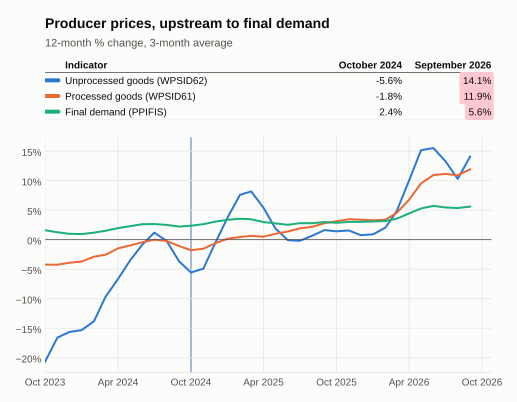

Business
Updated Oct 28, 2026 at 19:57 PDT
Each indicator compares its most recently available value to that of the baseline period, Oct 2023–Oct 2024. Values are computed monthly.
On a case by case basis, some indicators may have additional adjustments: e.g. 3-month averaging for highly variable series, or normalization by inflation.
Summary
- Improving: 6
- Worsening: 10
- Neutral: 2
Hover over or tap a dotted-underlined column header for its description.
The economic series being tracked. Its definition and any adjustments are described below the table. | The indicator's average over the baseline period, Oct 2023–Oct 2024, after any adjustments. | The indicator's average over the most recent months, after the same adjustments. When a series has no data yet for those months, its latest available value is used. | The unit the series is published in by its source, for example billions of dollars or an index level. | How far the indicator has moved from the baseline value to the current value. Shaded green when the indicator moved in its good direction and red when it moved the other way; neutral indicators and unchanged values are not shaded. Bold when larger than 10 (in either direction) and measured in % or % pts, to flag the biggest moves. | How the Delta is measured: % is a percent change, used for levels, prices and indexes; % pts (percentage points) is a simple difference, used for series that are already rates, such as an unemployment rate; Δ is a simple difference in the series' own units, used for index readings where a percent change would mislead. | Which way is good news: rising means a rise is an improvement, falling means a fall is an improvement, and neutral means the move is shown but not judged. |
|---|---|---|---|---|---|---|
| Core capital goods new orders | 83,556.32 | 87,640.00 | Millions of Dollars | 4.89 | % | rising |
| Manufacturing new orders, total | 665,759.55 | 663,491.00 | Millions of Dollars | -0.34 | % | rising |
| Inventories-to-sales ratio | 1.44 | 1.33 | ratio | -0.10 | % pts | falling |
| Industrial production | 100.38 | 103.31 | Index - Index 2017=100 | 2.91 | % | rising |
| Capacity utilization | 76.52 | 76.48 | % | -0.04 | % pts | rising |
| Employment Cost Index: Wages & Salaries | 167.52 | 179.01 | index - Dec 2005=100 | 6.86 | % | falling |
| Job openings rate (Nonfarm) | 4.89 | 4.33 | rate | -0.56 | % pts | falling |
| Layoffs & discharges: Total Nonfarm | 1.04 | 1.07 | rate | 0.03 | % pts | falling |
| Business applications (EINs) | 442,973.79 | 547,505.00 | count | 23.60 | % | rising |
| Diesel price | 3.91 | 5.99 | USD per gallon | 53.14 | % | falling |
| WTI crude oil | 79.16 | 85.14 | USD per barrel | 7.55 | % | falling |
| Global price of Copper | 8,855.11 | 13,962.21 | U.S. Dollars per Metric Ton | 57.67 | % | rising |
| PPI unprocessed goods for intermediate demand | -8.54 | 12.19 | Index 1982=100, seasonally adjusted | 20.72 | % pts | falling |
| PPI processed goods for intermediate demand | -2.11 | 11.41 | Index 1982=100, seasonally adjusted | 13.53 | % pts | falling |
| PPI final demand | 1.85 | 5.48 | Index Nov 2009=100, seasonally adjusted | 3.63 | % pts | falling |
| 10-Year Treasury Yield Averaged Daily | 4.24 | 4.83 | Percent | 0.60 | % pts | falling |
| Commercial & industrial loans | 2,761.54 | 2,916.97 | USD Billions, Seasonally Adjusted | 5.63 | % | neutral |
| Nonfinancial corporate debt | 14,397,511.80 | 15,698,562.00 | USD Millions, Seasonally Adjusted Annual Rate | 9.04 | % | neutral |
Produce Price Index

What each indicator means
- Core capital goods new orders: Manufacturers' New Orders: Nondefense Capital Goods Excluding Aircraft
Adjusted for inflation with price index PPIACO, in today's prices.
References: [1], [2] - Manufacturing new orders, total: Manufacturers' New Orders: Total Manufacturing
Adjusted for inflation with price index PPIACO, in today's prices.
References: [3], [2] - Inventories-to-sales ratio: Best early recession tell here: inventories rising into flat sales precedes production cuts.
Smoothed with a trailing 3-month average.
Reference: [4] - Industrial production: Measures the real output of all relevant establishments located in the United States, regardless of their ownership
Smoothed with a trailing 3-month average.
Reference: [5] - Capacity utilization: Covers manufacturing, mining, and electric and gas utilities
Smoothed with a trailing 3-month average.
Reference: [6] - Employment Cost Index: Wages & Salaries: Employment Cost Index: Wages and Salaries: Private Industry Workers
Smoothed with a trailing 3-month average.
Reference: [7] - Job openings rate (Nonfarm): Job Openings: Total Nonfarm
Smoothed with a trailing 3-month average.
Reference: [8] - Layoffs & discharges: Total Nonfarm: Layoffs & discharges: Total Nonfarm
Smoothed with a trailing 3-month average.
Reference: [9] - Business applications (EINs): Business Applications: Total for All North American Industries in the United States
Smoothed with a trailing 3-month average.
Reference: [10] - Diesel price: Impacts businesses: freight, agriculture and construction rather than consumers.
Reference: [11] - WTI crude oil: West Texas Intermediate crude oil spot price.
Smoothed with a trailing 3-month average.
Reference: [12] - Global price of Copper: The best single commodity signal of global industrial demand
Smoothed with a trailing 3-month average.
Reference: [13] - PPI unprocessed goods for intermediate demand: Most upstream rung. Noisiest series in this bucket -- BLS one-month changes run to +/-6 to 14% (Apr 2020: -14.3%), since unprocessed commodities have no fabrication stage to damp them. Hence the smoothing.
Converted to the 12-month percent change; then smoothed with a trailing 3-month average.
Reference: [14] - PPI processed goods for intermediate demand: Midstream rung, and the input leg of the margin spread. Fabricated inputs outrunning output prices means firms are absorbing cost, which lands in earnings a quarter or two later.
Converted to the 12-month percent change; then smoothed with a trailing 3-month average.
Reference: [15] - PPI final demand: Headline business inflation. Prices received by domestic producers -- seller's perspective, excludes imports, no sales tax.
Converted to the 12-month percent change; then smoothed with a trailing 3-month average.
Reference: [16] - 10-Year Treasury Yield Averaged Daily: Market Yield on U.S. Treasury Securities at 10-Year Constant Maturity, Quoted on an Investment Basis
Reference: [17] - Commercial & industrial loans: Commercial & industrial loans, all commercial banks.
Smoothed with a trailing 3-month average.
Reference: [18] - Nonfinancial corporate debt: Nonfinancial corporate debt
Reference: [19]
The 3 measures of Producer Price Index illustrate how businesses have had to compress their margins. Costs for raw (unprocessed) and intermediate (processed) goods have risen by double digit figures, while prices final goods (sold to their businesss or consumer customers) have risen by only 5.6%.